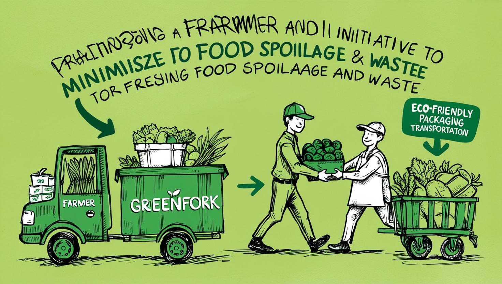

A Food Waste Management Initiative
Connecting surplus food with those in need and composting the rest for a sustainable future.
Get StartedGreenFork is dedicated to reducing food waste by connecting surplus food from merchants to seekers in need. Whether you're a business with excess inventory or an individual looking for affordable meals, we’ve got you covered. Our smart composting system ensures that unsalvageable food is turned into valuable resources, promoting sustainability.

Buy unsold food from local businesses at discounted prices.
Donate excess food instantly to nearby recipients.
Turn unsalvageable food into organic fertilizer with IoT monitoring.